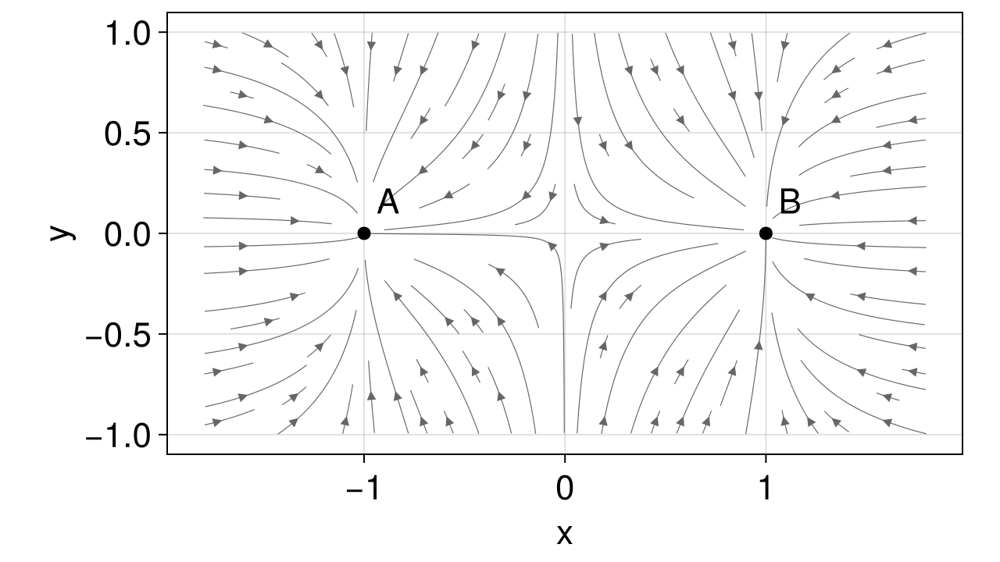
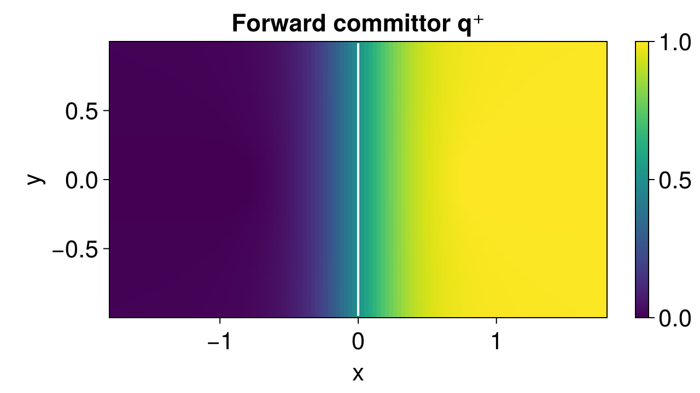
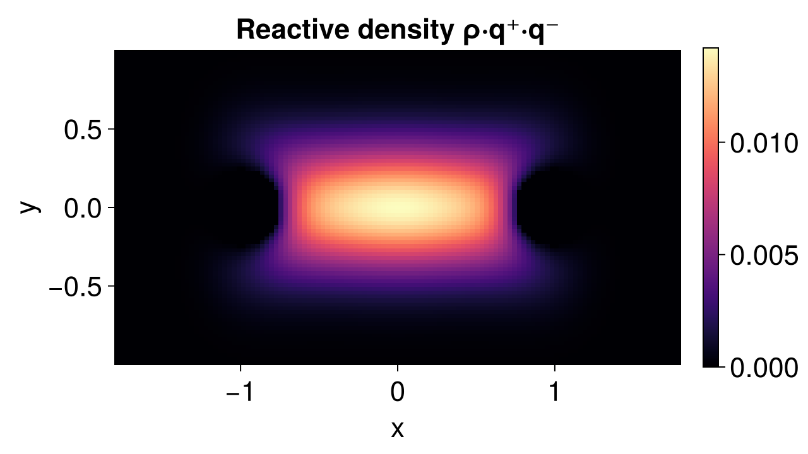
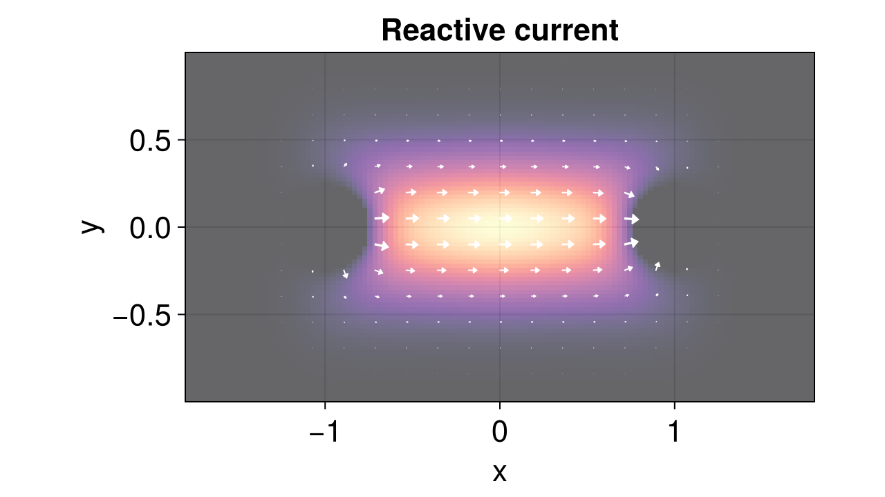
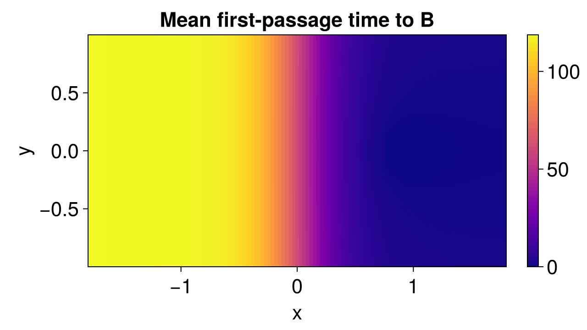

Transition Path Theory for a 2D double well
In this example we apply Transition Path Theory (TPT) to a two-dimensional overdamped double-well system. The full theoretical background and the layered API used below are documented in the Transition Path Theory manual. Here we focus on putting the pieces together end-to-end: discretise the diffusion on a Cartesian grid, solve for the committor, and visualise the reactive density and current.
using CriticalTransitions
using LinearAlgebra: norm
using CairoMakieSystem
We consider an overdamped 2D Itô diffusion
\[\mathrm{d}X_t = -\nabla U(X_t)\,\mathrm{d}t + \sigma\,\mathrm{d}W_t\]
with the separable potential
\[U(x, y) = \tfrac{1}{4}(x^2 - 1)^2 + \tfrac{1}{2}\,y^2 ,\]
whose drift is
\[b(x, y) = -\nabla U = \bigl(x - x^3,\; -y\bigr) .\]
The deterministic dynamics has stable fixed points at $(\pm 1, 0)$ and a saddle at the origin. The noise is isotropic with diffusion coefficient $\sigma^2$ along each axis. Because the drift is the gradient of a potential and the noise is isotropic, this is a reversible system — the backward committor satisfies $q^{-} = 1 - q^{+}$ exactly.
drift(u, p, t) = SA[u[1] - u[1]^3, -u[2]]
sys = CoupledSDEs(drift, [0.0, 0.0]; noise_strength = 0.4)2-dimensional CoupledSDEs
deterministic: false
discrete time: false
in-place: false
dynamic rule: drift
SDE solver: SOSRA
SDE kwargs: (abstol = 0.01, reltol = 0.01, dt = 0.1)
Noise type: (additive = true, autonomous = true, linear = true, invertible = true)
parameters: SciMLBase.NullParameters()
time: 0.0
state: [0.0, 0.0]
Visualise the drift field:
xs = range(-1.8, 1.8; length = 40)
ys = range(-1.0, 1.0; length = 24)
fig = Figure(; size = (640, 360))
ax = Axis(fig[1, 1]; xlabel = "x", ylabel = "y", aspect = DataAspect())
streamplot!(
ax,
p -> Point2f(p[1] - p[1]^3, -p[2]),
-1.8 .. 1.8,
-1.0 .. 1.0;
linewidth = 0.6,
colormap = [:gray40, :gray40],
arrow_size = 8,
gridsize = (28, 16),
)
scatter!(ax, [-1.0, 1.0], [0.0, 0.0]; color = :black, markersize = 12)
text!(ax, [-1.0, 1.0], [0.0, 0.0]; text = ["A", "B"], offset = (8, 8))
fig
Discretisation
We discretise on a uniform Cartesian grid covering the relevant transition region. The grid does not have to be square — here we use a finer resolution along $x$ since that is the reaction coordinate.
grid = CartesianGrid((-1.8, 1.8, 121), (-1.0, 1.0, 81))CartesianGrid{2}((121, 81), (0.02975206611570248, 0.024691358024691357), (LinRange{Float64}(-1.7851239669421488, 1.7851239669421488, 121), LinRange{Float64}(-0.9876543209876543, 0.9876543209876543, 81)), (LinRange{Float64}(-1.8, 1.8, 122), LinRange{Float64}(-1.0, 1.0, 82)))The metastable sets $A$ and $B$ are passed as predicates evaluated at each cell center; alternatively a BitVector or a vector of linear cell indices is accepted.
A = x -> norm(x .- SA[-1.0, 0.0]) < 0.25
B = x -> norm(x .- SA[1.0, 0.0]) < 0.25#5 (generic function with 1 method)Building the DiffusionGenerator is the expensive step (it sweeps the grid once and assembles the sparse rate matrix via the Scharfetter–Gummel scheme). Once it exists you can run any number of analyses on the same operator.
gen = DiffusionGenerator(sys, grid)DiffusionGenerator{2, Tuple{Reflecting, Reflecting}}(CartesianGrid{2}((121, 81), (0.02975206611570248, 0.024691358024691357), (LinRange{Float64}(-1.7851239669421488, 1.7851239669421488, 121), LinRange{Float64}(-0.9876543209876543, 0.9876543209876543, 81)), (LinRange{Float64}(-1.8, 1.8, 122), LinRange{Float64}(-1.0, 1.0, 82))), sparse([1, 2, 122, 1, 2, 3, 123, 2, 3, 4 … 9798, 9799, 9800, 9679, 9799, 9800, 9801, 9680, 9800, 9801], [1, 1, 1, 2, 2, 2, 2, 3, 3, 3 … 9799, 9799, 9799, 9800, 9800, 9800, 9800, 9801, 9801, 9801], [-320.23990123366013, 41.28125566531496, 112.45936819658093, 168.28053303707918, -355.6384835772311, 43.64345905964226, 112.45936819658093, 162.3978597153352, -352.43952881665894, 46.01647753202241 … 46.01647753202241, -352.43952881665894, 162.3978597153352, 112.45936819658093, 43.64345905964226, -355.6384835772311, 168.28053303707918, 112.45936819658093, 41.28125566531496, -320.23990123366013], 9801, 9801), (Reflecting(), Reflecting()))Sanity-check the discrete generator: rows of a CTMC rate matrix sum to zero and the off-diagonals are non-negative.
@show size(gen.Q)
@show maximum(abs, vec(sum(gen.Q; dims = 2)))9.947598300641403e-14Bundled TPT solve
ReactiveTransition computes the invariant density, both committors and the reactive rate in a single call:
result = ReactiveTransition(gen, A, B)
@show reactive_rate(result)
@show probability_reactive(result)
@show probability_last_A(result)0.5000000000000239forward_committor, backward_committor, and stationary_distribution are constant-time accessors on a ReactiveTransition:
qplus = forward_committor(result)
qminus = backward_committor(result)
ρ = stationary_distribution(result)9801-element Vector{Float64}:
9.344156960202418e-10
3.809085655409624e-9
1.417365361793296e-8
4.83076745581956e-8
1.5131819865998384e-7
4.3706787978678526e-7
1.1679003406953976e-6
2.896361666540048e-6
6.6873697091409664e-6
1.4419603429131333e-5
⋮
6.687369708909972e-6
2.896361666287669e-6
1.1679003404164277e-6
4.3706787947384497e-7
1.513181983019116e-7
4.8307674136910296e-8
1.417365310178241e-8
3.809084983986395e-9
9.344147432680594e-10Reshape from linear indexing into the grid shape for plotting:
reshape_grid(v) = reshape(v, grid.nbox)reshape_grid (generic function with 1 method)Forward committor
\[q^{+}(x, y)\]
is the probability that a trajectory started at $(x, y)$ reaches $B$ before $A$. It interpolates smoothly between $0$ on $A$ and $1$ on $B$, with the $0.5$-isoline running through the saddle.
x_centers = collect(grid.centers[1])
y_centers = collect(grid.centers[2])
fig = Figure(; size = (640, 360))
ax = Axis(fig[1, 1]; xlabel = "x", ylabel = "y", aspect = DataAspect(), title = "Forward committor q⁺")
hm = heatmap!(ax, x_centers, y_centers, reshape_grid(qplus); colormap = :viridis)
contour!(
ax, x_centers, y_centers, reshape_grid(qplus); levels = [0.5], color = :white, linewidth = 2
)
Colorbar(fig[1, 2], hm)
fig
Because the system is reversible, $q^{-} = 1 - q^{+}$ — let's verify:
@show maximum(abs.(qminus .- (1 .- qplus)))1.3694267941843918e-11Reactive density
The probability density of being on a reactive piece (one that just left $A$ and will reach $B$ before returning) is $\rho_R = \rho \cdot q^{+} \cdot q^{-}$. It concentrates around the most likely transition channels.
ρR = reactive_density(result)
fig = Figure(; size = (640, 360))
ax = Axis(fig[1, 1]; xlabel = "x", ylabel = "y", aspect = DataAspect(), title = "Reactive density ρ·q⁺·q⁻")
hm = heatmap!(ax, x_centers, y_centers, reshape_grid(ρR); colormap = :magma)
Colorbar(fig[1, 2], hm)
fig
Reactive current
reactive_current returns two NTuple{D} outputs: a per-axis array of face fluxes (one per axis-aligned face) and a per-axis array of node-centered fluxes (averaged onto cell centers). The node-centered version is convenient for plotting an arrow field.
J_nodes, _ = reactive_current(result)
Jx, Jy = J_nodes # each is a 121×81 array([1.3855466682997218e-13 1.8583671465348462e-13 … 1.8583119033005032e-13 1.3854077999792308e-13; 4.2279544690841067e-13 5.67145736698729e-13 … 5.671398219653529e-13 4.2278391976449293e-13; … ; 4.2278391976447935e-13 5.671398219653359e-13 … 5.671398219653273e-13 4.2278391976447763e-13; 1.385407799979095e-13 1.8583119033002995e-13 … 1.8583119033002656e-13 1.385407799979061e-13], [-1.669241533274761e-13 -2.788869343046653e-13 … 2.788953677582997e-13 1.6693591507185915e-13; -6.849967890154602e-13 -1.1444584040088616e-12 … 1.1444636202344035e-12 6.850024756688494e-13; … ; 6.850024756688657e-13 1.144463620234379e-12 … -1.1444636202343748e-12 -6.850024756688903e-13; 1.6693591507186324e-13 2.78895367758312e-13 … -2.7889536775830173e-13 -1.6693591507186733e-13])Subsample for a clean arrow plot:
step = 6
Is = 1:step:grid.nbox[1]
Js = 1:step:grid.nbox[2]
xq = [x_centers[i] for i in Is, _ in Js]
yq = [y_centers[j] for _ in Is, j in Js]
ux = [Jx[i, j] for i in Is, j in Js]
uy = [Jy[i, j] for i in Is, j in Js]
mag = sqrt.(ux .^ 2 .+ uy .^ 2)
mmax = maximum(mag)
fig = Figure(; size = (640, 360))
ax = Axis(fig[1, 1]; xlabel = "x", ylabel = "y", aspect = DataAspect(), title = "Reactive current")
heatmap!(
ax, x_centers, y_centers, reshape_grid(ρR); colormap = :magma, alpha = 0.6,
)
arrows2d!(
ax,
vec(xq), vec(yq),
vec(ux ./ mmax), vec(uy ./ mmax);
color = :white,
lengthscale = 0.08,
)
fig
The reactive current points consistently from $A$ toward $B$ and is strongest near the saddle, as expected.
Mean first-passage time
The same DiffusionGenerator supports other backward-Kolmogorov analyses without rebuilding. For instance, the mean first-passage time to $B$ as a function of starting point:
τ = mean_first_passage_time(gen, B)
fig = Figure(; size = (640, 360))
ax = Axis(fig[1, 1]; xlabel = "x", ylabel = "y", aspect = DataAspect(), title = "Mean first-passage time to B")
hm = heatmap!(ax, x_centers, y_centers, reshape_grid(τ); colormap = :plasma)
Colorbar(fig[1, 2], hm)
fig
Reusing the generator
Because the generator is decoupled from the metastable sets, we can sweep over different choices of $A$ and $B$ at the cost of a single sparse solve each:
for r in (0.2, 0.25, 0.3, 0.35)
Ar = x -> norm(x .- SA[-1.0, 0.0]) < r
Br = x -> norm(x .- SA[1.0, 0.0]) < r
k = reactive_rate(ReactiveTransition(gen, Ar, Br))
println("r = $r → k_AB = $(round(k; sigdigits = 4))")
endr = 0.2 → k_AB = 0.004229
r = 0.25 → k_AB = 0.004265
r = 0.3 → k_AB = 0.004311
r = 0.35 → k_AB = 0.004368Authored by O. Ameye and R. Börner
This page was generated using Literate.jl.